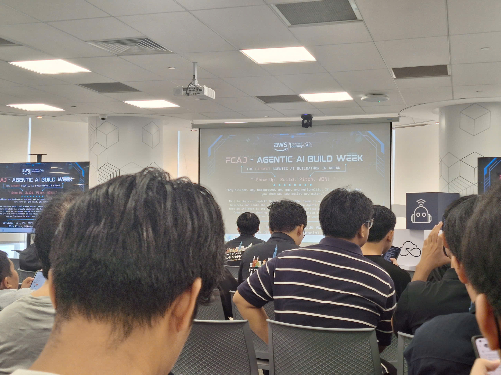
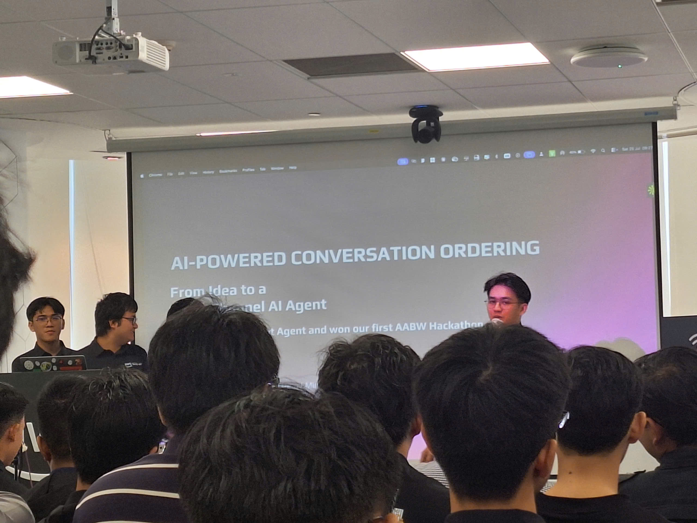
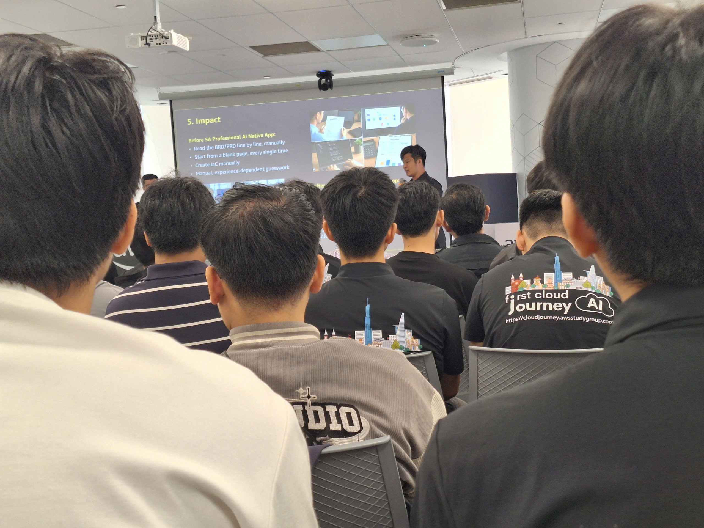

FCAJ x Agentic AI Build Week: Show Up. Build. Pitch. WIN!
Bài thu hoạch “FCAJ x Agentic AI Build Week: Show Up. Build. Pitch. WIN!”
Mục Đích Của Sự Kiện
- Chia sẻ hành trình và kinh nghiệm của các đội đạt thành tích cao trong cuộc thi Agentic AI Build Week (AABW).
- Giới thiệu các ý tưởng ứng dụng Agentic AI vào những bài toán thực tế trong doanh nghiệp.
- Tìm hiểu cách các đội xây dựng giải pháp AI Agent trên nền tảng AWS.
- Học hỏi tư duy đổi mới, khả năng thích ứng với sự phát triển nhanh chóng của công nghệ AI.
Danh Sách Diễn Giả
- Giuseppe Marazzotta - Head of Technology, AWS
- Các team đã tham gia AABW.
Nội Dung Nổi Bật
Chia sẻ từ Giuseppe Marazzotta (Head of Technology, AWS)
Sự thay đổi về tốc độ phát triển công nghệ
Diễn giả Giuseppe Marazzotta đã chia sẻ về sự thay đổi nhanh chóng của tốc độ phát triển công nghệ qua từng giai đoạn.
- Trong quá khứ, việc phát hành một bản cập nhật phần mềm có thể mất nhiều tuần, thậm chí hàng tháng để hoàn thiện.
- Hiện nay, với sự xuất hiện của Agentic AI, các AI Agent có khả năng hỗ trợ tự động hóa nhiều công đoạn trong quá trình phát triển, từ phân tích yêu cầu, tạo mã nguồn đến triển khai thay đổi với tốc độ nhanh hơn rất nhiều.
- Điều này tạo ra một kỷ nguyên mới, nơi khả năng thích nghi và học hỏi nhanh chóng trở thành lợi thế quan trọng của các kỹ sư công nghệ.
Tư duy đổi mới (Mental Model)
Một trong những thông điệp quan trọng được chia sẻ là các kỹ sư trẻ cần chủ động thay đổi cách suy nghĩ và không bị giới hạn bởi những phương pháp truyền thống.
- Thế hệ trẻ có lợi thế lớn khi không bị ràng buộc bởi các hệ thống legacy hoặc những tư duy đã tồn tại trong nhiều thập kỷ.
- Việc liên tục học hỏi, thử nghiệm công nghệ mới và kết hợp AI vào quy trình làm việc sẽ giúp các builder trẻ nhanh chóng trở thành những người dẫn đầu trong tương lai.
- AI không chỉ là công cụ hỗ trợ mà còn là yếu tố giúp mở rộng khả năng sáng tạo và giải quyết vấn đề.
AI và tự động hóa ở quy mô lớn
Diễn giả cũng chia sẻ những ví dụ thực tế về việc ứng dụng tự động hóa trong các hệ thống lớn.
- Amazon hiện đang vận hành hơn một triệu robot tại các trung tâm phân phối trên toàn cầu.
- Tuy nhiên, dù công nghệ tự động hóa phát triển mạnh mẽ, vai trò của con người trong việc thiết kế, quản lý và định hướng hệ thống vẫn giữ vị trí quan trọng.
- Công nghệ chỉ thực sự tạo ra giá trị khi được kết hợp với tư duy giải quyết vấn đề của con người.
Các Dự Án Tiêu Biểu Từ Cuộc Thi AABW
Team Top 1 (Quán quân)
Ý tưởng và giải pháp
Đội đạt giải nhất phát triển một hệ thống Multi-Agent System nhằm tối ưu hóa quy trình làm việc và hỗ trợ ra quyết định trong môi trường doanh nghiệp.
Kiến trúc kỹ thuật
Giải pháp sử dụng nhiều AI Agent với các vai trò chuyên biệt:
- Planner Agent: Lập kế hoạch và phân chia nhiệm vụ.
- Execution Agent: Thực hiện các tác vụ được giao.
- Reviewer Agent: Kiểm tra và đánh giá kết quả đầu ra.
Hệ thống được xây dựng dựa trên các công nghệ như AWS Bedrock và LangChain, đồng thời tích hợp Guardrails để:
- Kiểm soát độ chính xác của kết quả.
- Giảm tình trạng AI tạo ra thông tin sai lệch (hallucination).
- Đảm bảo an toàn và bảo mật dữ liệu.
Điểm nổi bật
- Có phần demo hoàn chỉnh với khả năng xử lý lỗi tự động thông qua cơ chế self-healing loop.
- Giải pháp giải quyết vấn đề thực tế của doanh nghiệp trong việc giảm chi phí vận hành và tăng tốc độ xử lý công việc.
Team Top 2 (Á quân)
Ý tưởng và giải pháp
Đội phát triển nền tảng hỗ trợ tự động hóa việc phân tích dữ liệu và tạo báo cáo thông minh bằng Agentic AI.
Kiến trúc và tính năng
Hệ thống có khả năng:
- Kết nối với các nguồn dữ liệu thô.
- Sử dụng AI Agent để truy vấn, xử lý và phân tích dữ liệu.
- Tự động trích xuất những thông tin quan trọng mà không cần quá nhiều thao tác thủ công từ Data Analyst.
Đánh giá từ ban giám khảo
- Ý tưởng có tính thực tế cao và khả năng mở rộng tốt.
- Đội thi thể hiện tư duy trưởng thành khi nhìn nhận sản phẩm sau 48 giờ phát triển chỉ là một Proof of Concept (POC).
- Các thành viên cũng phân tích rõ những thách thức khi đưa hệ thống vào môi trường Production như kiểm soát rủi ro, chi phí vận hành và khả năng mở rộng.
Dự Án SA App (Solution Architect / System Assistant App)
Ý tưởng và giải pháp
SA App là một trợ lý AI Agent hỗ trợ Solution Architect trong quá trình thiết kế, kiểm tra và tối ưu hóa kiến trúc hệ thống trên AWS.
Tính năng chính
- Tự động thẩm định kiến trúc: So sánh thiết kế hệ thống với các tiêu chuẩn trong AWS Well-Architected Framework.
- Tối ưu chi phí: Đưa ra đề xuất giảm chi phí sử dụng tài nguyên cloud.
- Tăng cường bảo mật: Phát hiện các vấn đề bảo mật trong cấu hình hệ thống.
Đánh giá
Giải pháp mang tính thực tế cao đối với các kỹ sư Cloud, giúp giảm đáng kể thời gian kiểm tra thủ công và hỗ trợ quá trình thiết kế kiến trúc hiệu quả hơn.
Dự Án SHEPHERD
Ý tưởng và mục tiêu
SHEPHERD là một giải pháp AI Agent đóng vai trò như một “người chăn cừu”, có nhiệm vụ điều phối và giám sát một hệ thống gồm nhiều AI Agent khác nhau.
Cách thức hoạt động
Hệ thống hỗ trợ:
- Quản lý vòng đời của các tác vụ.
- Điều phối workflow giữa các Agent.
- Kiểm tra chất lượng đầu ra của từng Agent.
- Đảm bảo các Agent hoạt động đúng mục tiêu và tuân thủ các quy định đề ra.
Điểm nổi bật
Dự án đặt nền móng cho việc quản trị các hệ thống Agent-to-Agent (A2A), một hướng phát triển quan trọng khi các hệ thống AI ngày càng trở nên phức tạp.
Dự Án Anti-Money Laundering (AML Agent)
Ý tưởng và bài toán giải quyết
Dự án ứng dụng Agentic AI trong lĩnh vực tài chính - ngân hàng nhằm phát hiện và ngăn chặn các hành vi gian lận, rửa tiền theo thời gian thực.
Phương pháp xử lý
AI Agent có khả năng:
- Phân tích hành vi giao dịch và phát hiện các mẫu bất thường.
- Liên kết dữ liệu giữa nhiều tài khoản và khoảng thời gian khác nhau.
- Tự động tổng hợp hồ sơ nghi vấn.
- Tra cứu danh sách cảnh báo và tạo báo cáo phục vụ bộ phận Risk/Compliance.
Giá trị mang lại
- Giảm tỷ lệ cảnh báo sai (false positives).
- Rút ngắn thời gian điều tra các giao dịch đáng ngờ.
- Hỗ trợ nhân viên kiểm soát rủi ro xử lý thông tin nhanh chóng hơn.
Những Gì Học Được
Về tư duy công nghệ
- Nhận thức được tốc độ phát triển rất nhanh của AI và tầm quan trọng của khả năng thích ứng.
- Hiểu rằng AI không thay thế hoàn toàn con người mà là công cụ giúp con người nâng cao khả năng giải quyết vấn đề.
- Cần có tư duy đổi mới, sẵn sàng thử nghiệm những công nghệ mới thay vì chỉ phụ thuộc vào cách làm truyền thống.
Về kiến trúc và phát triển hệ thống
- Hiểu rõ hơn về cách xây dựng hệ thống Multi-Agent với các Agent có vai trò riêng biệt.
- Biết được tầm quan trọng của việc kiểm soát AI thông qua các cơ chế như Guardrails.
- Nhận thấy sự cần thiết của việc thiết kế hệ thống có khả năng mở rộng, xử lý lỗi và đảm bảo an toàn dữ liệu.
Về ứng dụng thực tế của AI
- Agentic AI có thể được áp dụng trong nhiều lĩnh vực như doanh nghiệp, phân tích dữ liệu, Cloud Architecture và tài chính.
- Các giải pháp AI cần tập trung vào việc giải quyết vấn đề thực tế thay vì chỉ chạy theo công nghệ mới.
- Một sản phẩm AI thành công cần cân bằng giữa tính đổi mới, khả năng triển khai thực tế và chi phí vận hành.
Ứng Dụng Vào Công Việc
- Tìm hiểu và áp dụng mô hình AI Agent vào các dự án phát triển phần mềm trong tương lai.
- Quan tâm nhiều hơn đến việc thiết kế hệ thống có khả năng mở rộng và tự động hóa.
- Kết hợp AI vào quy trình phát triển để tăng năng suất lập trình.
- Áp dụng tư duy giải quyết vấn đề dựa trên nhu cầu thực tế thay vì chỉ tập trung vào công nghệ.
Trải nghiệm trong event
Tham gia buổi chia sẻ về cuộc thi Agentic AI Build Week (AABW) đã giúp tôi có cái nhìn rõ hơn về xu hướng phát triển của AI hiện nay cũng như cách các đội thi biến ý tưởng thành những giải pháp có khả năng ứng dụng thực tế.
Học hỏi từ các chuyên gia và đội thi
- Phần chia sẻ của Giuseppe Marazzotta giúp tôi hiểu hơn về tốc độ thay đổi của công nghệ và vai trò của thế hệ kỹ sư trẻ trong thời đại AI.
- Các dự án đạt giải cho thấy cách kết hợp giữa AI Agent, Cloud Computing và tư duy thiết kế hệ thống để giải quyết những bài toán thực tế.
Hiểu thêm về khả năng của Agentic AI
- Qua các dự án Multi-Agent System, SA App hay SHEPHERD, tôi hiểu rõ hơn cách nhiều AI Agent có thể phối hợp với nhau để thực hiện những nhiệm vụ phức tạp.
- Tôi nhận thấy việc xây dựng AI không chỉ tập trung vào khả năng sinh nội dung mà còn cần quan tâm đến kiểm soát, bảo mật và tính tin cậy.
Bài học rút ra
- Công nghệ AI đang phát triển với tốc độ rất nhanh, vì vậy khả năng học hỏi và thích ứng là yếu tố quan trọng đối với kỹ sư phần mềm.
- Những giải pháp AI có giá trị nhất là những giải pháp giải quyết được vấn đề thực tế của doanh nghiệp.
- Trong tương lai, sự kết hợp giữa con người và AI sẽ trở thành yếu tố quan trọng trong quá trình phát triển phần mềm.
Một số hình ảnh khi tham gia sự kiện



Tổng thể, sự kiện đã giúp tôi mở rộng góc nhìn về Agentic AI, hiểu thêm cách các đội ngũ công nghệ xây dựng sản phẩm thực tế và nhận thức rõ hơn về vai trò của việc liên tục học hỏi trong thời đại AI.